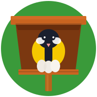

Společně sledujeme ptačí budky po celé České republice.
…
Celkem budek

…
Osídlených budek
👤
…
Registrovaných správců
👍
…
Aktivních budek
📈 Návštěvnost
…Celkem
…Dnes
…Včera
🟢 Online: …
📅 Poslední aktualizace: …
☆ Uložit do oblíbenýchWindows / Linux: Ctrl + DMac: Cmd + D
Z deníku správců
Co se právě děje v našich budkách po celé zemi.
Načítám aktuality…
✦✦✦✦
MojeBudky.cz
✦
Desatero odpovědného správce budky
Naše společné hodnoty a závazky k přírodě
🦅
Bezpečí ptáků je na prvním místě Při umisťování, kontrole i čištění budky vždy dbám na to, aby nebyli ohroženi její obyvatelé ani já sám. Respektuji přírodu a do hnízdění zasahuji jen v nejnutnějších případech.
Správné umístění je základ úspěchu Budku instaluji na bezpečné místo – dostatečně vysoko před predátory (kočky, kuny), stabilně a s vletovým otvorem ideálně na jihovýchod až východ, aby do ní nefoukalo a nepršelo.
Pravidelný podzimní úklid je povinnost Před zimou budku pečlivě vyčistím a odstraním staré hnízdo. Tím chráním budoucí generace ptáčat před parazity a připravuji jim čistý domov na další jaro. Na jaře provedu kontrolu před hnízděním.
V době hnízdění neruším Když ptáci sedí na vejcích nebo krmí malá ptáčata, budku neotvírám a pozoruji ji jen z bezpečné vzdálenosti. Klid na hnízdění je klíčem k úspěšnému vyvedení mladých.
Data v aplikaci udržuji aktuální Pravidelně a poctivě zapisuji všechna pozorování, kontroly a stav budky do naší webové aplikace MojeBudky. Každý záznam a nahraná fotka pomáhají celému projektu.
Jsem očima a ušima své budky Sleduji technický stav budky. Pokud je poškozená, opravím ji, nebo včas nahlásím potřebu opravy, aby byla pro ptáky stále bezpečným útočištěm.
Šířím osvětu a radost z přírody O své zážitky a znalosti se dělím s rodinou, přáteli nebo sousedy. Pomáhám ostatním pochopit, proč je ochrana ptactva důležitá a jak jim správně pomáhat.
Respektuji pravidla komunity MojeBudky Jsem hrdým členem naší komunity. Jednám fér, pomáhám ostatním správcům, sdílím své zkušenosti a táhnu za jeden provaz pro dobrou věc.
Pomáhám ptákům po celý rok V zimě přikrmuji kvalitní stravou v krmítkách, v létě nabízím ptákům na zahradě bezpečné napajedlo s čistou vodou. Budka je jen začátek péče.
Chráním přírodu jako celek Uvědomuji si, že ptáci potřebují k životu zdravé prostředí. Nepoužívám na zahradě zbytečnou chemii a podporuji rozmanitost přírody v okolí své budky.
Podporovatelé projektu MojeBudky.cz
Načítám…
🙏 Poděkování
Vítejte v administraci
Zde spravujete svou ptačí budku v projektu MojeBudky.cz. Po přihlášení budete mít přístup ke kartě správce, editaci budky a dalším funkcím.